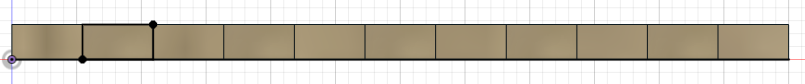

Computer Controlled Cutting
Computers allows us to cut materials using data. This reduces wastage of materials by using specific measurements
Parametric Box
Boxes are useful in many projects, and making a parametric box allows the design to be reused for other projects. To start, I defined all the parameters needed for the box.
Then, I sketched and extruded the base of the box using the length and width measurments. To create the tabs, I made another sketch on the side face of the box. I extruded the tab to the thickness defined by the parameters then used the rectangular pattern to repeat the tabs along the length of the side.
I then created the side of the box by extruding it to thickness. To create the tabs on the side of the box, I used the combine tool to cut the tabs on the side panel. I then repeated the above steps for the tabs along the front and height of the box, then I duplicated it for the back and other side of the box.
For the lid, I created a sketch of the size of the lid using the defined parameters, then extruded it to thickness.
To make the hinge, I made the sketch of 2 circles that will fit the connecting piece of the lid, then extruded it to both sides of the box.

Final Product